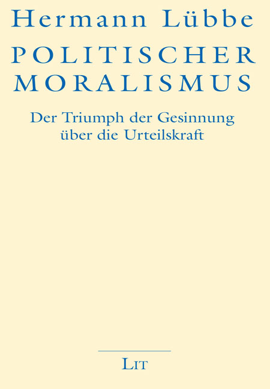
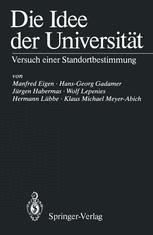
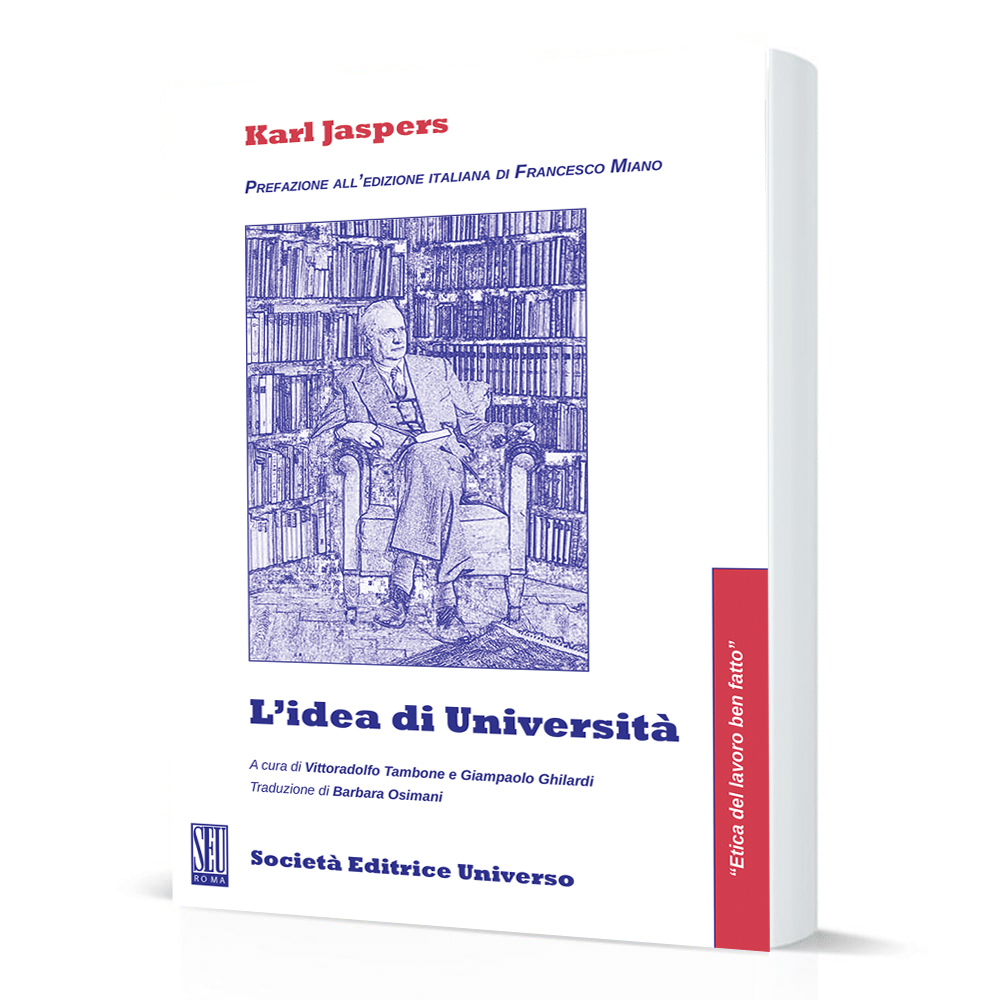
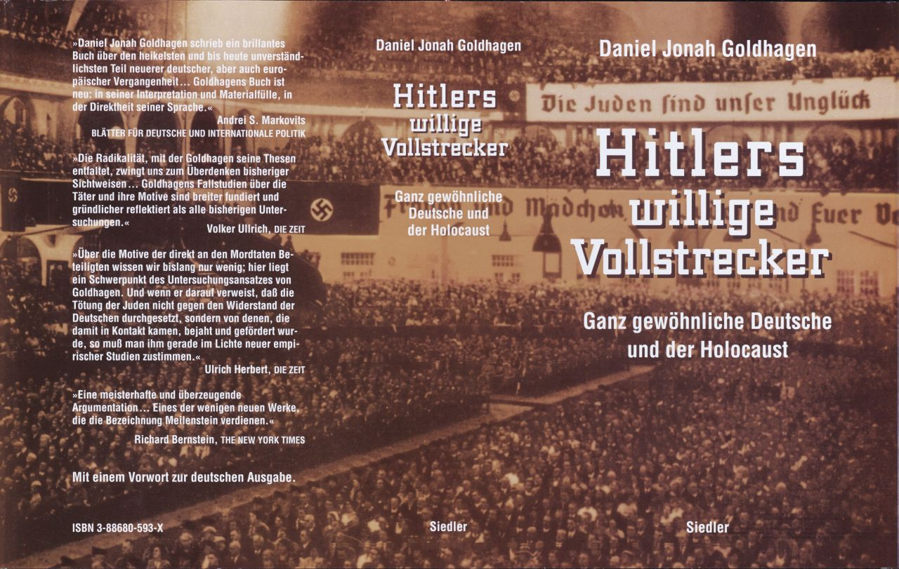
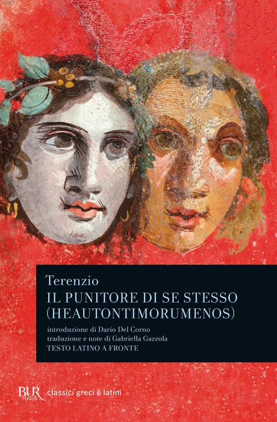
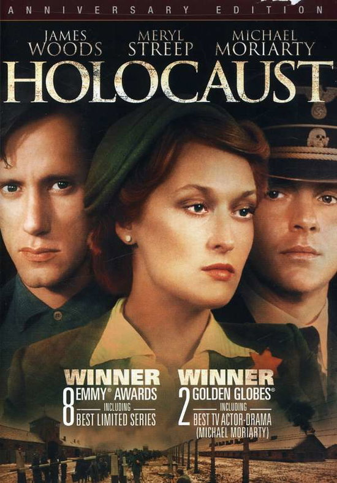

1:16:28 · 11 OPERE
Moralismo politico: il trionfo del sentimento sul giudizio.
Il filo del discorso
La lettura di Politischer Moralismus di Hermann Lübbe diventa una riflessione sul rapporto fra convinzione morale, capacità di giudicare e responsabilità personale. Il relatore rende liberamente Gesinnung con sentimento e domanda come la certezza di servire una buona causa possa convivere con azioni criminali. Dopo un’introduzione sul ruolo degli intellettuali e sul prestigio delle istituzioni, distingue la competenza nel realizzare un obiettivo dalla domanda se quell’obiettivo sia ragionevole. La ragione strumentale, ripresa attraverso Horkheimer, può coordinare perfettamente i mezzi senza interrogare il fine: l’immagine dell’operaio che conosce soltanto il proprio gesto nella catena di montaggio serve a rendere visibile questa separazione. Una lunga digressione su I volenterosi carnefici di Hitler di Goldhagen porta il problema dentro la storia del nazismo. Il relatore legge un passo sul capitano Wolfgang Hoffmann del Battaglione di polizia 101, offeso dalla richiesta di impegnarsi a non sottrarre beni ai polacchi mentre partecipava a un apparato di uccisione. Il contrasto fra onore professionale e crimine diventa il centro della sua domanda sull’educazione morale. Il richiamo a Pensavano di essere liberi di Milton Mayer riguarda invece il modo in cui una narrazione collettiva modifica la percezione di quanto è accaduto. Terenzio, Céline, Koigen e l’anello di Gige in Platone ampliano il discorso sull’umanità, sull’impunità e sulla capacità di vedere l’insieme delle proprie azioni. Il relatore applica ripetutamente questa chiave interpretativa alle politiche pandemiche, ai medici vaccinatori e ai comportamenti sociali contemporanei. Li presenta come esempi di delega del giudizio all’autorità e arriva a paragoni con Eichmann e con i crimini totalitari. Sono sue accuse e analogie polemiche: non costituiscono prova di un progetto genocida, di danni causati a singole persone o di responsabilità penali dei soggetti nominati. Allo stesso modo, l’espressione anime danneggiate appartiene al lessico filosofico e polemico discusso, non a una diagnosi di Merkel, Draghi, Macron o di intere categorie di cittadini. La parte conclusiva torna alla trasformazione della coscienza: quando la convinzione ideologica sostituisce il controllo critico, il soggetto può leggere la violazione della morale comune come un dovere superiore. Il personaggio fittizio Dorf nella miniserie Holocaust illustra questo rovesciamento. Alla critica di una cultura ridotta a manuali e slogan segue il richiamo agli esperimenti di Milgram come immagine della possibilità di sottrarsi all’autorità. Il fiocco di neve che si somma agli altri esprime la fiducia del relatore nell’effetto del dissenso individuale; una frase attribuita a Primo Levi chiude il contributo sul rifiuto della frode verso chi si affida e della violenza.
I libri nel discorso

Politischer Moralismus. Der Triumph der Gesinnung über die Urteilskraft
Copertina della riedizione tedesca LIT 2019: Copertina della riedizione tedesca LIT 2019
Riedizione LIT 2019, ISBN 9783643143006. È la stessa opera, ma non la prima Siedler 1987 che il relatore dichiara di mostrare. La traduzione italiana del titolo nel video è libera; non dimostra l’esistenza di un’edizione italiana.
riconoscimento_vocale_locale
Passaggio 0:08 ↗ · Fonti e libro ↗
Die Idee der Universität. Versuch einer Standortbestimmung
Copertina Springer della raccolta Die Idee der Universität, 1988: Copertina Springer della raccolta Die Idee der Universität, 1988
Immagine editoriale della raccolta completa, pubblicazione originale 1988, edizione digitale 2013. Non copertina del libro di Jaspers né dei singoli contributi. Volume specifico posseduto non verificato visivamente nel video.
riconoscimento_vocale_locale
Passaggio 6:58 ↗ · Fonti e libro ↗
L’idea di Università
Copertina: Società Editrice Universo, 2021; testo del 1946, italiano e tedesco.
Copertina autentica della rielaborazione del 1946 nell’edizione SEU 2021, a cura di Vittoradolfo Tambone e Giampaolo Ghilardi, traduzione di Barbara Osimani, prefazione di Francesco Miano. Il video ricorda la versione del 1923: le redazioni non sono trattate come testi identici e la citazione orale non è stata collazionata integralmente con tutte le versioni. Edizione posseduta dal relatore non determinata.
riconoscimento_vocale_locale
Passaggio 7:06 ↗ · Fonti e libro ↗
A World Split Apart (Discorso di Harvard)
Identificazione probabile
Copertina: Harper & Row · edizione bilingue russo e inglese · 1978
Immagine autentica dell’opera, controllata visivamente; l’edizione di riferimento non è attribuita al filmato.
riconoscimento_vocale_locale
Passaggio 11:12 ↗ · Fonti e libro ↗
Hitler’s Willing Executioners. Ordinary Germans and the Holocaust / I volenterosi carnefici di Hitler. I tedeschi comuni e l’Olocausto
Sovraccoperta completa dell’edizione tedesca Siedler 1996, esemplare museale: Sovraccoperta completa dell’edizione tedesca Siedler 1996, esemplare museale
Fotografia museale della sovraccoperta completa, con fronte, dorso e retro; ISBN 388680593 X. Non copertina italiana mostrata dal relatore, non prima edizione inglese, non immagine di un’opera diversa. Nessun ritaglio o ricostruzione.
riconoscimento_vocale_locale
Passaggio 14:06 ↗ · Fonti e libro ↗
They Thought They Were Free: The Germans, 1933–45
Identificazione probabile
Copertina: Copertina della edizione inglese ampliata University of Chicago Press 2017, con postfazione di Richard J. Evans, ISBN 9780226525839. Il catalogo corrente indica 384 pagine, mentre una pagina di estratto ne indica 368; la differenza non identifica la precisa tiratura del filmato. Prima pubblicazione 1955. La traduzione orale del titolo non dimostra una edizione italiana specifica.
Titolo e autore leggibili sulla copertina originale del sito editoriale; Evans è autore della postfazione, non coautore della inchiesta 1955.
riconoscimento_vocale_locale
Passaggio 20:15 ↗ · Fonti e libro ↗
Il punitore di se stesso (Heautontimorumenos)
Identificazione probabile
Copertina: BUR, 6 giugno 1990, 192 pagine, ISBN 9788817167703. Introduzione di Dario Del Corno, traduzione e note di Gabriella Gazzola; testo latino a fronte. L’edizione è di riferimento e non è attribuita al video.
Copertina BUR autentica vista integralmente: due volti antichi in rosso, titolo Il punitore di se stesso e autore Terenzio nel riquadro nero. Il titolo bibliografico viene identificato dalla citazione, non è pronunciato nel contributo.
riconoscimento_vocale_locale
Passaggio 31:04 ↗ · Fonti e libro ↗Viaggio al termine della notte
Copertina: Corbaccio · 2011
Copertina autentica controllata visivamente. Edizione di riferimento; non identifica l’esemplare usato o citato nel video.
riconoscimento_vocale_locale
Passaggio 37:53 ↗ · Fonti e libro ↗
Ideen zur Philosophie der Kultur: Der Kulturakt
Identificazione probabile
Copertina: Frontespizio dell’edizione München und Leipzig, Georg Müller, 1910, esemplare University of California Libraries
Immagine autentica della medesima opera; esemplare o edizione dell’immagine non confermati nella registrazione.
riconoscimento_vocale_locale
Passaggio 44:11 ↗ · Fonti e libro ↗
La Repubblica
Identificazione probabile
Copertina: Laterza · La Repubblica · edizione con testo a fronte di riferimento
Immagine associata all’ISBN di riferimento e controllata visivamente; edizione e traduzione non identificate come quelle citate o lette nel video.
riconoscimento_vocale_locale
Passaggio 54:29 ↗ · Fonti e libro ↗
Holocaust: The Story of the Family Weiss (Olocausto, miniserie televisiva)
Copertina DVD Paramount / CBS Anniversary Edition 2008 della miniserie 1978: Copertina DVD Paramount / CBS Anniversary Edition 2008 della miniserie 1978
Copertina del DVD Anniversary Edition, UPC 0097366220647, distribuito da Paramount / CBS il 27 maggio 2008 secondo scheda commerciale e comunicato primario del distributore. Non romanzo, non locandina originale, non Holocaust 2000 o altro omonimo. Edizione vista dal relatore non identificata.
riconoscimento_vocale_locale
Passaggio 1:05:16 ↗ · Fonti e libro ↗Minutaggi ricavati da testi automatici, da riascoltare. Le identificazioni probabili sono segnalate accanto ai libri.